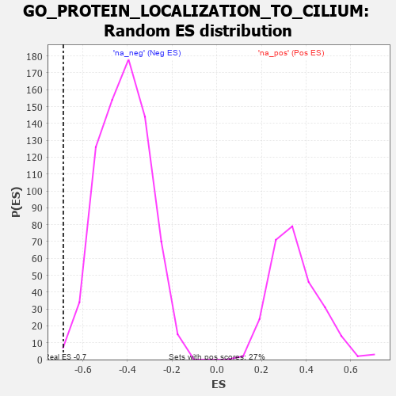

| | | Dataset | 7d |
| Phenotype | NoPhenotypeAvailable |
| Upregulated in class | na_neg |
| GeneSet | GO_PROTEIN_LOCALIZATION_TO_CILIUM |
| Enrichment Score (ES) | -0.68732953 |
| Normalized Enrichment Score (NES) | -1.6510626 |
| Nominal p-value | 0.0013736264 |
| FDR q-value | 0.061787292 |
| FWER p-Value | 0.998 |
Table: GSEA Results Summary
 Fig 1: Enrichment plot: GO_PROTEIN_LOCALIZATION_TO_CILIUM
Fig 1: Enrichment plot: GO_PROTEIN_LOCALIZATION_TO_CILIUM
Profile of the Running ES Score & Positions of GeneSet Members on the Rank Ordered List
| PROBE | GENE SYMBOL | GENE_TITLE | RANK IN GENE LIST | RANK METRIC SCORE | RUNNING ES | CORE ENRICHMENT | | 1 | GGA1 | | | 3952 | 0.002 | -0.4966 | No |
| 2 | TULP2 | | | 3997 | -0.007 | -0.5015 | No |
| 3 | BBIP1 | | | 4226 | -0.046 | -0.5260 | No |
| 4 | ARF4 | | | 4383 | -0.073 | -0.5390 | No |
| 5 | EHD1 | | | 5560 | -0.336 | -0.6565 | Yes |
| 6 | BBS4 | | | 5806 | -0.407 | -0.6506 | Yes |
| 7 | ARL6 | | | 5847 | -0.417 | -0.6180 | Yes |
| 8 | IFT80 | | | 6135 | -0.515 | -0.6077 | Yes |
| 9 | BBS1 | | | 6397 | -0.616 | -0.5850 | Yes |
| 10 | TUB | | | 6611 | -0.718 | -0.5471 | Yes |
| 11 | WDR19 | | | 6796 | -0.812 | -0.4970 | Yes |
| 12 | NPHP4 | | | 6991 | -0.931 | -0.4374 | Yes |
| 13 | DZIP1 | | | 7009 | -0.940 | -0.3548 | Yes |
| 14 | ARL3 | | | 7041 | -0.963 | -0.2718 | Yes |
| 15 | WDR35 | | | 7357 | -1.225 | -0.2010 | Yes |
| 16 | GAS8 | | | 7540 | -1.455 | -0.0927 | Yes |
| 17 | CROCC | | | 7639 | -1.628 | 0.0417 | Yes |
Table: GSEA details [plain text format]

Fig 2: GO_PROTEIN_LOCALIZATION_TO_CILIUM: Random ES distribution
Gene set null distribution of ES for GO_PROTEIN_LOCALIZATION_TO_CILIUM